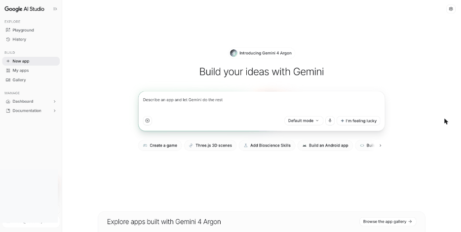
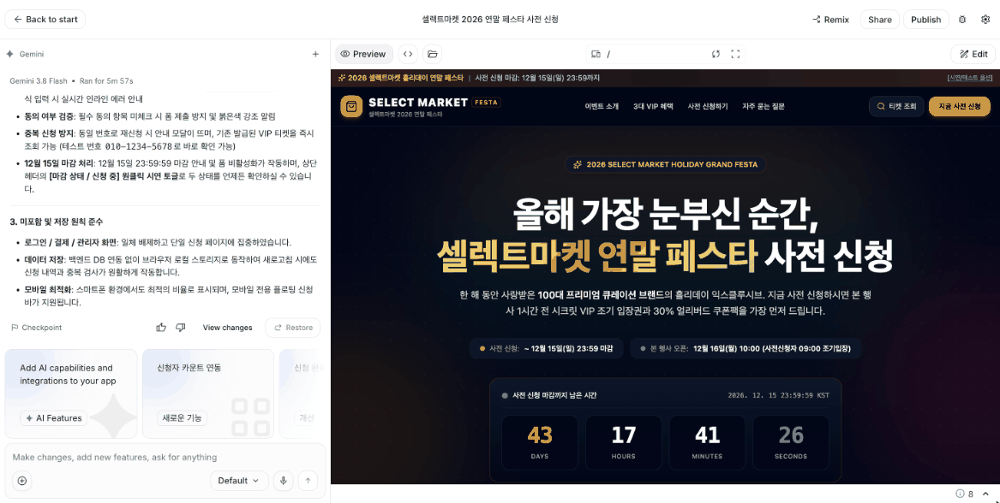
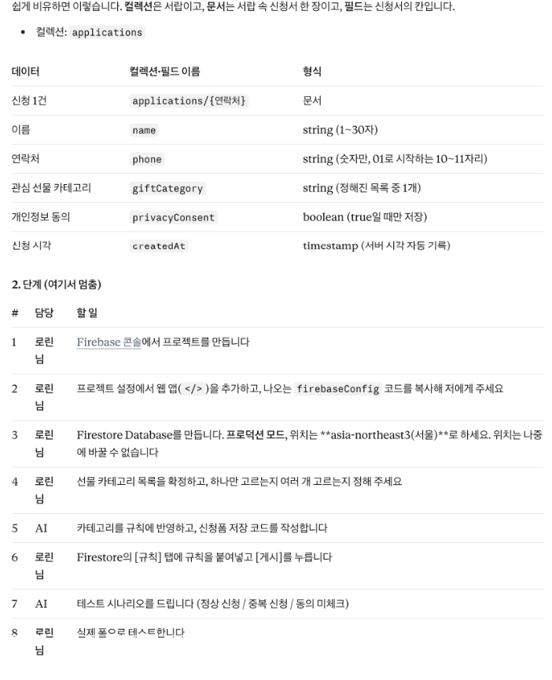
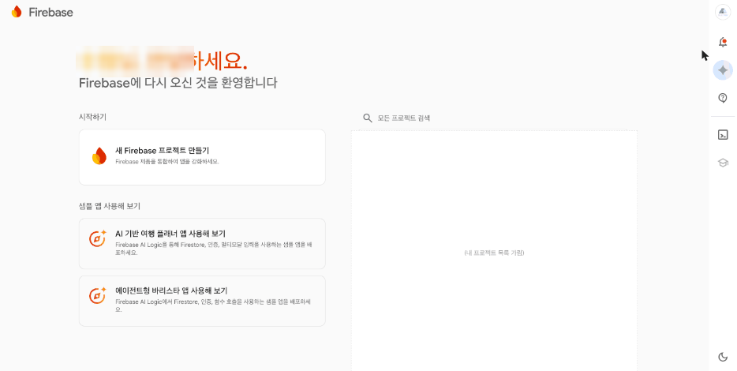

구글 AI 스튜디오와 Firebase로 모두의 신청을 한곳에 모아요
구글 서비스는 계정 하나로 이어져요. 오늘은 그 지도를 먼저 보고, 같은 요청서로 AI 스튜디오에서 페이지를 만든 뒤 프롬프트로 Firestore 저장을 붙이고 배포까지 해요. 마지막에 한 주의 결과를 PRD v2로 정리해요.
교육 개요
| 시간 | 09:00–18:00 (점심 12:00–13:00, 수업 8시간) |
|---|---|
| 교과 | [기본] AI 서비스 개발 · 6일차 (총 18일) |
| 교육 목표 | 구글 서비스가 각각 무슨 일을 하는지 구분할 수 있다. 데이터 정의표를 Firestore 구조로 바꾸고, AI 스튜디오에 프롬프트로 저장을 연결해 배포할 수 있다. 한 주 동안 확인한 사실로 PRD를 고칠 수 있다. |
| 세션 진행 방식 | 세션 종류에 따라 순서가 달라요. 기획 산출물: 개념 → 예시 → 내 것 만들기 → 점검 → 결과 / 도구 실습: 개념 → 따라 하기 → 막히면 → 결과 / 개념·판단: 개념 → 예시 → 해 보기 → 결과 |
| 수업이 끝나면 | ① 구글 서비스 5개의 역할과 이벤트 페이지에서 쓰이는 곳을 말한다 ② 같은 요청서로 AI 스튜디오에서 페이지를 만들고 볼트와 비교한다 ③ 데이터 정의표를 컬렉션·문서·필드로 바꾼다 ④ 프롬프트로 Firestore 저장을 연결하고 콘솔에서 데이터를 눈으로 확인한다 ⑤ 배포 주소에서 테스트 시나리오를 다시 실행한다 ⑥ PRD v2와 한 주 회고를 쓴다 |
수업 전 준비
- 개인 구글 계정: AI 스튜디오 배포는 회사·학교 계정보다 개인 계정을 권해요(구글 공식 코드랩). 결제 정보를 등록한 적 없는 개인 계정이면 앱 2개까지 결제 계정 없이 배포할 수 있어요(Starter Tier, 구글 공식 문서).
- Firebase 콘솔: console.firebase.google.com 에 같은 계정으로 들어갈 수 있는지 확인해요. 저장된 데이터를 눈으로 확인할 때 써요.
- 어제 결과: 볼트 요청서와 테스트 시나리오 표를 열어 두세요.
기획 산출물 · 개념 → 예시 → 내 것 만들기 → 점검 → 결과
도구 실습 · 개념 → 따라 하기 → 막히면 → 결과
개념·판단 · 개념 → 예시 → 해 보기 → 결과
프롬프트는 요청 / 내용 / 형식 3줄로 쓰고, 바꿔 넣을 자리는 [ ]로 표시했어요. 1주차 첫날 배운 4요소(역할·맥락·작업·형식)를 줄인 것이에요. 요청 = 작업, 내용 = 역할과 맥락, 형식 = 형식이에요. 신청 폼 실습에는 실제 이름·연락처 대신 가상의 정보만 넣어요.
타임테이블
| 시간 | 구분 | 내용 |
|---|---|---|
| 09:00–09:20 | 오늘의 단어 | 오늘의 단어 |
| 09:20–09:40 | SESSION 1 | 구글 서비스 지도 |
| 09:40–11:00 | SESSION 2 | 같은 요청서로 AI 스튜디오에서 만들기 |
| 11:00–12:00 | SESSION 3 | 데이터 정의표를 Firestore 구조표로 바꾸기 |
| 12:00–13:00 | 점심 | |
| 13:00–14:40 | SESSION 4 | AI 스튜디오에 Firestore 연결하고 콘솔에서 확인하기 |
| 14:40–16:10 | SESSION 5 | Publish로 배포하고 테스트 시나리오 다시 실행 |
| 16:10–17:40 | SESSION 6 | PRD v2와 한 주 회고 |
| 17:40–18:00 | 정리 | 오늘 정리와 과제 |
오늘의 단어
오늘 처음 나오는 말을 먼저 짧게 짚고 시작해요. 수업 중에 다시 나오면 이 표로 돌아와요.
| 단어 | 뜻 |
|---|---|
| 구글 AI 스튜디오 | 구글의 AI 모델로 앱을 만들어 보는 웹 도구 |
| Firebase | 구글의 '앱 뒷단' 서비스 묶음(데이터베이스·호스팅·로그인 등) |
| Firestore | Firebase 안의 데이터베이스 |
| 컬렉션 | 같은 종류의 문서를 모은 폴더 |
| 문서 | 데이터 한 건. 신청서 한 장 |
| 필드 | 문서 안의 칸(이름·연락처 등) |
| 보안 규칙 | 누가 데이터를 읽고 쓸 수 있는지 정하는 규칙 |
구글 서비스 지도
개념1-1. 개념
오늘 직접 실습하는 도구는 AI 스튜디오와 Firebase(Firestore)예요. GA(구글 애널리틱스)·앱스스크립트·안티그래비티는 이후 수업에서 분석·자동화·개발에 쓸 도구예요. 오늘은 역할만 알아 둬요. Firebase는 데이터베이스 하나가 아니에요. 데이터 저장, 호스팅, 로그인 같은 서비스를 묶은 모음이에요. 그중 데이터베이스의 이름이 Firestore예요.
예시1-2. 채워진 예시
이벤트 페이지 기준으로 정리한 예시예요.
| 서비스 | 하는 일 | 이벤트 페이지에서 쓰는 곳 |
|---|---|---|
| 구글 AI 스튜디오 | 말로 화면·앱 만들기, Firestore 연결, 배포 | 신청 페이지 만들기·저장·배포(오늘) |
| Firebase | 데이터 저장·호스팅·로그인 | 신청 데이터 확인(오늘) |
| GA(구글 애널리틱스) | 방문·행동 측정 | 방문 대비 신청 완료율(보조 지표) 측정, 이후 수업 |
| 앱스스크립트 | 구글 문서·시트·메일 자동화 | 신청자 안내 메일, 이후 수업 |
| 안티그래비티 | 내 컴퓨터에서 AI와 코딩 | 파일이 많아졌을 때 수정, 이후 수업 |
해 보기1-3. 해 보기
요청: 구글 서비스 5개를 기획자 관점에서 한 장으로 정리해 줘 내용: 서비스: [구글 AI 스튜디오, Firebase, GA, 앱스스크립트, 안티그래비티] / 내 서비스: [이커머스 셀렉트마켓 연말 이벤트 사전 신청 페이지] 형식: 표(하는 일 / 이벤트 페이지에서 쓰는 곳 / 무료로 되는 범위 [확인 필요] 허용)

결과1-4. 결과
이렇게 보이면 성공오늘 쓰는 두 서비스와 이후에 쓸 세 서비스를 구분해 말할 수 있다
링크가 있으면 누구나 볼 수 있어요(보기 전용, 편집 불가). AI가 만든 결과 그대로라 내 결과와 다를 수 있어요. 내 것을 먼저 만든 다음 비교해요.
- 구글 문서 구글 서비스 5종 정리
같은 요청서로 AI 스튜디오에서 만들기
개념2-1. 개념
어제 쓴 볼트 요청서를 그대로 AI 스튜디오 Build에 넣어요. 결과는 두 곳에 적어요. 어제 도구 비교표에는 AI 스튜디오 줄을 더하고, 아래 결과 비교표에는 '같은 요청, 다른 결과'를 적어요. 저장 연결은 오후 4번 세션에서 따로 해요. 첫 요청에 저장까지 넣으면 설정 단계에서 막히기 쉬워요.
https://aistudio.google.com/apps
왼쪽 Build의 'New app' 화면 가운데 입력창에 요청서를 넣고 보내요. 만든 앱은 왼쪽 'My apps'에 남아요.

따라 하기2-2. 따라 하기
aistudio.google.com/apps 의 Build 입력창에 아래 요청을 넣고 보내요.
프롬프트 2 · 복사해서 AI 스튜디오 Build 입력창에 붙여 넣으세요요청: 이커머스 셀렉트마켓 연말 이벤트 사전 신청 페이지를 만들어 줘 내용: 요청서: [어제 볼트 요청서 그대로 — 만들 것: 소개·혜택 3가지·신청 폼·완료 안내 / 만들지 않을 것: 로그인·결제·관리자 화면 / 예외: 연락처 형식, 동의, 중복 신청, 12월 15일 마감] / 저장: [아직 연결하지 말 것] 형식: 한 페이지, 휴대폰에서도 보이게

실행 결과 · 구글 AI 스튜디오의 Build 화면에 그대로 넣어 실행한 결과예요(2026.11.02 실행). 왼쪽 요약에 '브라우저 로컬 스토리지로 동작'이라고 보여요. 요청에 '저장은 아직 연결하지 말 것'이라고 썼는데도 저장을 붙였어요. 요청서에 없던 숫자(100대 브랜드, 30% 쿠폰팩, 행사 오픈 날짜)도 지어 넣었어요. 그래서 '요청한 것이 다 들어갔나'와 함께 '요청하지 않은 것이 들어갔나'도 봐요. 이미지를 누르면 크게 보여요. 미리보기에서 요청서 항목과 예외 문구가 들어갔는지 봐요. 요청에 없는 숫자나 기능이 들어갔는지도 찾아요.
세 도구 결과를 비교표로 정리해요.
프롬프트 3 · 점검·피드백요청: 세 도구 결과를 내 비교 결과표로 정리해 줘 내용: 관찰: [클로드는 예외 문구를 추가 요청해야 했다 / 볼트는 저장·배포까지 됐다 / AI 스튜디오는 (내가 본 것)] 형식: 표(기준 5개 × 도구 3개) + '이럴 때 이 도구' 한 줄씩. 내가 관찰하지 않은 칸은 [확인 필요]
기록표
같은 요청서를 세 도구에 넣은 결과 비교 예시예요.
| 기준 | 클로드 아티팩트 | 볼트 | AI 스튜디오 |
|---|---|---|---|
| 요청서 항목이 다 들어갔나 | 예 | 예 | 예(요청에 없는 숫자도 추가) |
| 예외 문구가 들어갔나 | 요청 후 추가 | 예 | 예 |
| 저장까지 됐나 | 아니오 | 예(내장 DB) | 4번 세션 |
| 배포까지 됐나 | 파일로 꺼내 배포 | 예 | 5번 세션 |
| 다시 쓸 때 | 시안·문구 다듬기 | 빠른 배포 시안 | 구글 서비스와 연결 |
| 기준 | 클로드 아티팩트 | 볼트 | AI 스튜디오 |
|---|---|---|---|
| 요청서 항목이 다 들어갔나 | |||
| 예외 문구가 들어갔나 | |||
| 저장까지 됐나 | |||
| 배포까지 됐나 | |||
| 다시 쓸 때 |
막히면2-3. 막히면
| 이렇게 보이면 | 이렇게 해요 |
|---|---|
| '저장 연결하지 말 것'이라고 했는데 브라우저 저장이 붙었어요 | 강사 실행에서도 그랬어요. 오후 4번 세션 프롬프트에서 Firestore로 바꾸면서 정리해요. |
결과2-4. 결과
이렇게 보이면 성공세 도구의 '다시 쓸 때' 칸이 서로 다르다
링크가 있으면 누구나 볼 수 있어요(보기 전용, 편집 불가). 구글 계정 로그인이 필요할 수 있어요. 미리보기 신청 폼에는 실제 이름·연락처 대신 가상의 정보만 넣어요.
- 구글 AI 스튜디오 앱 AI 스튜디오로 만든 사전 신청 페이지
데이터 정의표를 Firestore 구조표로 바꾸기
개념3-1. 개념
Firestore에서는 컬렉션(폴더) 안에 문서(신청서 한 장)가 쌓여요. 문서 안에는 필드(칸)가 있어요. 수요일에 만든 데이터 정의표를 이 구조로 바꿔요. 같은 사람이 두 번 신청하지 못하게 막는 방법도 여기서 정해요. 신청 목록은 아무나 읽지 못하게 막아야 해요. 그러면 앱도 목록을 읽어서 '이미 신청했는지' 찾을 수 없어요. 그래서 다른 방법을 써요. 연락처(숫자만)를 문서 이름(ID)으로 쓰고, '새로 만들기만 허용' 규칙을 걸어요. 같은 연락처로 다시 신청하면 이미 있는 문서를 덮어쓰려는 것이 되어, 규칙이 막아 줘요.
예시3-2. 채워진 예시
데이터 정의표를 Firestore 구조로 바꾼 예시예요.
| 데이터 정의표 | Firestore | 예시 값 |
|---|---|---|
| 신청 내역 | 컬렉션: applications | — |
| 신청 1건 | 문서 ID: 연락처 숫자 | 01000000000 |
| 이름 | 필드 name (문자) | 박지은 |
| 연락처 | 필드 phone (문자) | 010-0000-0000 |
| 관심 선물 카테고리 | 필드 category (문자) | 뷰티 |
| 개인정보 동의 | 필드 agreed (참·거짓) | true |
| 신청 시각 | 필드 createdAt (시각) | 2026-11-06 14:03 |
만들기3-3. 내 것 만들기
빈 템플릿을 직접 채우거나, 아래 프롬프트로 AI 초안을 받아 내 내용으로 고쳐요. 둘 중 편한 쪽 하나면 돼요. [ ] 안은 예시 값이니 내 내용으로 바꿔 써요.
요청: 신청하면 Firestore에 저장되게 하려고 해. 내 데이터 정의표를 컬렉션·문서·필드 구조로 바꾸고, Firebase 설정이 필요한 단계에서는 멈추고 내가 할 일을 알려 줘 내용: 데이터 정의표: [입력: 이름·연락처·관심 선물 카테고리·개인정보 동의 / 저장: 신청 내역 + 신청 시각] / 중복 신청 정책: [같은 연락처면 저장하지 않고 '이미 신청하셨어요'] 형식: 표(데이터 / 컬렉션·필드 이름 / 형식) + 단계 목록(내가 할 일 · AI가 할 일 구분)

| 데이터 정의표 | Firestore | 예시 값 |
|---|---|---|
| 컬렉션: | ||
| 문서 ID: | ||
| 필드 | ||
| 필드 | ||
| 필드 | ||
| 필드 | ||
| 필드 |
점검3-4. 점검·피드백
칭찬 말고 고칠 점을 받는 게 목적이에요.
요청: 내 Firestore 구조표를 점검해 줘. 읽기를 막은 상태에서도 중복 신청을 막을 수 있는지 봐 줘 내용: 구조표: [내 구조표 붙여 넣기] / 보안: [아무나 읽기는 막고, 신청 추가만 허용] 형식: 표(항목 / 문제 있음·없음 / 고칠 점). 규칙을 모두 열어 두는 방법은 답으로 주지 마
결과3-5. 결과
이렇게 보이면 성공필드 이름이 데이터 정의표의 항목과 하나씩 짝이 맞는다
링크가 있으면 누구나 볼 수 있어요(보기 전용, 편집 불가). AI가 만든 결과 그대로라 내 결과와 다를 수 있어요. 내 것을 먼저 만든 다음 비교해요.
- 구글 문서 Firestore 데이터 구조
AI 스튜디오에 Firestore 연결하고 콘솔에서 확인하기
개념4-1. 개념
구글 AI 스튜디오의 Build 모드는 Firestore를 직접 준비하고, 그것을 쓰는 코드까지 써 줘요(구글 공식 문서). 그래서 오늘 꼭 할 일은 AI 스튜디오에 프롬프트로 요청하는 것이에요. Firebase 콘솔에서 손으로 설정하는 방법은 (선택)이에요. 중간에 승인 카드가 나오면 내용을 읽고 직접 눌러요.
https://console.firebase.google.com
AI 스튜디오가 Firestore를 연결하면 Firebase 프로젝트가 생겨요. 콘솔 첫 화면 오른쪽 프로젝트 목록에서 그 프로젝트를 찾아 들어가요. 그다음 Firestore Database → 데이터에서 신청을 확인해요. 직접 만들 때는 왼쪽 '새 Firebase 프로젝트 만들기'를 눌러요.

따라 하기4-2. 따라 하기
오전에 만든 AI 스튜디오 앱의 대화창(Make changes…)에 아래 프롬프트를 붙여 넣어요. 구조는 오전에 만든 구조표 그대로예요.
프롬프트 6 · 복사해서 AI 스튜디오 앱 대화창에 붙여 넣으세요요청: 이 앱에 Firestore를 연결해서 신청이 저장되게 해 줘. 지금 브라우저 저장(로컬 스토리지)이 있으면 Firestore 저장으로 바꿔 줘. 다른 부분은 그대로 둬 내용: 구조: [컬렉션 applications / 필드 name(문자)·phone(문자)·category(문자)·agreed(참·거짓)·createdAt(시각)] / 중복 신청 정책: [같은 연락처면 저장하지 않고 '이미 신청하셨어요'] / 보안: [아무나 읽기는 막고, 신청 추가만 허용] 형식: 바꾼 부분 요약 3줄. 내가 직접 확인하거나 승인해야 하는 단계가 있으면 진행 전에 먼저 알려 줘

실행 결과 · AI 스튜디오 앱 대화창에서 실행한 결과예요(2026.11.02 실행). 왼쪽: 바로 진행하지 않고 'Enable Firebase Firestore' 승인 카드를 먼저 띄웠어요. 이 버튼을 누르면 Firebase 이용 약관에 동의하고 내 구글 계정에 Firebase 프로젝트가 만들어져요. 오른쪽: 승인한 뒤 받은 요약이에요. 컬렉션과 필드를 연결했고, 읽기는 막고 추가만 허용하는 규칙과 중복 신청 막기를 넣었다고 해요. 이미지를 누르면 크게 보여요. 'Enable Firebase Firestore' 같은 승인 카드가 나오면 눌러요. 이때 Firebase 약관 동의와 Firebase 프로젝트 만들기가 함께 진행돼요.
미리보기에서 가상의 신청 1건을 넣어요.
console.firebase.google.com 에서 방금 생긴 프로젝트를 열고 Firestore Database → 데이터에서 applications 컬렉션과 문서를 확인해요. 프로젝트가 여러 개라면 가장 최근에 만든 것부터 열어요.
같은 연락처로 한 번 더 신청해서 문서가 늘지 않는지 봐요. 늘었다면 AI에게 어떻게 막았는지 물어보고, 오전 구조표의 '문서 ID = 연락처' 방식으로 고쳐 달라고 해요.
(선택) Firebase 콘솔에서 직접 설정하는 방법필요할 때 펼쳐 보세요
다른 도구(클로드, 볼트 등)로 만든 페이지에 Firestore를 붙일 때 써요. 설정 화면을 직접 보고 싶을 때도 써요. AI에게 'AI가 할 일(코드 연결)'과 '내가 콘솔에서 할 일'을 나눠 달라고 요청해요.
- Firebase 콘솔(console.firebase.google.com)에서 프로젝트를 만들어요.
- 프로젝트 설정에서 웹 앱(</> 모양)을 추가하고, 나오는 설정 코드(firebaseConfig)를 AI에게 넘겨요.
- Firestore Database를 만들어요. 위치는 한 번 정하면 바꿀 수 없으니 안내를 읽고 골라요(Firebase 공식 문서).
- 규칙(Rules) 탭에 AI가 써 준 규칙을 붙여 넣고 게시해요. '아무나 다 쓰기'로 열어 두지 않아요.
- 페이지에서 신청하고 Data 탭에서 applications 컬렉션과 문서를 확인해요.
막히면4-3. 막히면
| 이렇게 보이면 | 이렇게 해요 |
|---|---|
| FirebaseError: Missing or insufficient permissions 오류 | 보안 규칙이 저장을 막았어요. 아래 프롬프트에 오류 문장을 그대로 붙여 원인을 물어요. 규칙을 '아무나 다 쓰기'로 여는 건 해결이 아니에요. 누구나 신청자 정보를 읽고 지울 수 있게 돼요. |
요청: Firebase 저장이 안 될 때 읽는 법을 연습하고 싶어. 아래 오류가 무슨 뜻인지, 내가 콘솔에서 확인할 것을 알려 줘 내용: 오류: [FirebaseError: Missing or insufficient permissions.] 형식: 원인 후보 + 콘솔에서 확인할 순서. 규칙을 모두 열어 두는 방법을 답으로 주지는 마

결과4-4. 결과
이렇게 보이면 성공콘솔 applications 컬렉션에 문서가 보이고, 같은 연락처로 다시 신청해도 문서가 늘지 않는다
링크가 있으면 누구나 볼 수 있어요(보기 전용, 편집 불가). 앱은 구글 계정 로그인이 필요할 수 있어요. 신청 폼에는 가상의 정보만 넣어요.
- 구글 AI 스튜디오 앱 Firestore를 연결한 같은 앱
- 구글 문서 (점검·피드백) 권한 오류 점검 가이드
Publish로 배포하고 테스트 시나리오 다시 실행
개념5-1. 개념
AI 스튜디오에서 만든 앱은 오른쪽 위 Publish 버튼으로 구글 클라우드(Cloud Run)에 배포해요. 결제 정보를 등록한 적 없는 개인 계정은 앱 2개까지 결제 없이 배포할 수 있어요. 이것을 Starter Tier라고 해요. 결제 계정이 지금 있거나 예전에 있었던 계정은 Starter Tier를 쓸 수 없어요. 이때는 결제가 연결된 구글 클라우드 프로젝트가 필요해요(구글 공식 문서). 그러면 요금이 생길 수 있어요. 또 내 앱을 쓰는 사람이 Gemini를 부를 때마다 내 API 키가 쓰여요. 다 쓴 앱은 Unpublish로 내려요(구글 공식 코드랩).
따라 하기5-2. 따라 하기
앱 화면 오른쪽 위 Publish → Get started를 눌러요.
Step 1 'Confirm project and billing' 화면이 나오면 읽어요. 결제 계정을 새로 등록하라는 안내가 나오면 등록하지 말고 멈춰요. 강사에게 알리고, 강사 화면으로 배포 장면을 같이 봐요.
Step 2 'Final touches'에서 앱 이름·설명·주소를 확인하고 Publish를 눌러요. 배포가 끝나면 나온 주소를 열어요.
어제 테스트 시나리오 표를 그대로 다시 실행해 볼트판과 비교해요. 휴대폰 신청과 컴퓨터 신청이 콘솔에 함께 보이는지 확인해요.
두 버전을 비교해 다음에 고칠 것 하나를 골라요.
프롬프트 8 · 점검·피드백요청: 두 버전의 테스트 결과를 비교해서 다음에 고칠 것 1개를 골라 줘 내용: 결과: [볼트판 테스트 표와 AI 스튜디오판 테스트 표를 그대로 붙여 넣기. 실행하지 않은 줄은 '미실행'] 형식: 표(번호 / 두 버전 차이 / 원인 추정) + 다음에 고칠 것 1개와 이유
수업이 끝나고 더 쓰지 않을 앱은 Publish 화면에서 Unpublish를 눌러 내려요.
기록표
배포 주소에서 다시 실행한 테스트 시나리오 예시예요.
| 번호 | 행동 | 기대 결과 | 볼트판 | AI 스튜디오판 |
|---|---|---|---|---|
| 1 | 휴대폰에서 모든 칸 입력 후 신청 | 완료, 콘솔에 문서 1개 | O | O |
| 2 | 연락처 형식 오류 | 안내, 저장 안 됨 | O | O |
| 3 | 동의 없이 신청 | 안내, 저장 안 됨 | O | O |
| 4 | 같은 연락처로 다시 신청 | '이미 신청하셨어요' | X→수정 후 O | O |
| 5 | 컴퓨터에서 신청 | 콘솔에 휴대폰 신청과 함께 | O | O |
| 번호 | 행동 | 기대 결과 | 볼트판 | AI 스튜디오판 |
|---|---|---|---|---|
| 1 | ||||
| 2 | ||||
| 3 | ||||
| 4 | ||||
| 5 |
(선택) Firebase 호스팅·App Hosting으로 올리는 방법필요할 때 펼쳐 보세요
Firebase 호스팅은 HTML 파일 같은 정적 사이트를 올리는 곳이에요. App Hosting은 Next.js·Angular처럼 화면과 서버가 함께 있는 앱(풀스택 앱)을 올리는 곳이에요. 깃헙과 연결해 두면 커밋할 때마다 자동으로 배포돼요(Firebase 공식 문서). 둘 다 버튼 하나로 끝나지 않아요. 터미널 명령이나 깃헙 연결이 필요해요. 요금제 조건은 설정 화면의 안내를 따라요.
- AI 스튜디오 Settings의 GitHub 탭에서 저장소를 만들거나 연결해 코드를 깃헙에 올려요(구글 공식 문서).
- 만든 앱이 정적 HTML인지, Next.js·Angular인지 AI에게 물어봐요. 답에 따라 호스팅과 App Hosting 중 하나를 골라요.
- App Hosting이면 Firebase 콘솔에서 깃헙 저장소를 연결해요. 호스팅이면 터미널 명령으로 올려요(이후 수업에서 다뤄요).
- 배포 주소에서 테스트 시나리오를 다시 실행해요.
막히면5-3. 막히면
| 이렇게 보이면 | 이렇게 해요 |
|---|---|
| Step 1에서 결제 계정을 요구해요 | Starter Tier 대상이 아닌 계정이에요(결제 계정이 있거나 있었던 계정, 회사·학교 계정 등). 개인 계정으로 바꾸거나 강사 시연으로 봐요. |
| 이미 앱 2개를 배포했다고 나와요 | Starter Tier는 2개까지예요. 쓰지 않는 앱을 Unpublish해요(구글 공식 문서). |
결과5-4. 결과
이렇게 보이면 성공콘솔에 휴대폰과 컴퓨터에서 넣은 신청 2건이 보인다
PRD v2와 한 주 회고
개념6-1. 개념
화요일 PRD v1의 '확인 필요' 칸이 이번 주 실습으로 많이 채워졌어요. 직접 확인한 사실만 넣어 PRD를 v2로 고쳐요. 회고는 계속할 것, 문제였던 것, 해 볼 것 세 가지로 쓰고 다음 행동으로 바꿔요. 하나 조심할 것이 있어요. Firebase 콘솔에서 신청을 볼 수 있다는 것은 만든 사람이 데이터를 볼 수 있다는 뜻이에요. 운영자가 쓰는 신청 관리 화면을 만든 것은 아니에요.
예시6-2. 채워진 예시
PRD v1 → v2로 바뀐 칸과 회고 예시예요.
| 항목 | v1 | v2 (이번 주 확인한 사실) |
|---|---|---|
| IA | 운영자: 신청 목록(확인 필요) | 운영자 화면은 아직 없음. 제작자가 Firebase 콘솔에서 신청 확인 |
| 데이터 설계 | — | applications 컬렉션, 문서 ID = 연락처, 필드 5개 |
| 배포 | — | AI 스튜디오 Publish 배포 주소 |
| 확인 필요 | 알림 문자 발송 방법 | 알림 문자 발송 방법(그대로), 운영자 화면 필요 여부, 보안 규칙 운영 기준 |
| 회고 | — | 계속: 요청서 먼저 / 문제: 중복 신청 누락 / 시도: 테스트 표를 요청서에 붙이기 |
만들기6-3. 내 것 만들기
빈 템플릿을 직접 채우거나, 아래 프롬프트로 AI 초안을 받아 내 내용으로 고쳐요. 둘 중 편한 쪽 하나면 돼요. [ ] 안은 예시 값이니 내 내용으로 바꿔 써요.
요청: 이번 주 결과로 내 PRD를 v2로 갱신해 줘. 내가 확인한 사실만 반영하고, 나머지는 v1 그대로 둬 내용: PRD v1: [IA: 고객 이벤트 페이지(소개·혜택·신청 폼) → 신청 완료 / 운영자: 신청 목록(확인 필요) · 데이터 설계: 확인 필요 · 배포: 확인 필요 · 확인 필요: 신청 목록 보는 곳, 알림 문자 발송 방법] / 이번 주 확인한 사실: [저장: Firestore applications 컬렉션, 필드 name·phone·category·agreed·createdAt / 배포: AI 스튜디오 배포(Cloud Run) / 운영자 확인: Firebase 콘솔 / 중복 신청: 연락처 기준으로 막음] 형식: 표(항목 / v1 / v2 / 바뀐 이유). 남은 '확인 필요'는 따로 목록

| 항목 | v1 | v2 (이번 주 확인한 사실) |
|---|---|---|
| IA | ||
| 데이터 설계 | ||
| 배포 | ||
| 확인 필요 | ||
| 회고 | — | 계속: / 문제: / 시도: |
점검6-4. 점검·피드백
칭찬 말고 고칠 점을 받는 게 목적이에요.
요청: 내 한 주 회고를 읽고 다음 주에 바로 할 행동 1개로 바꿔 줘. 칭찬은 빼고 내용: 회고: [내가 쓴 계속·문제·시도 3줄 붙여 넣기] 형식: 행동 1개(언제·무엇을·어떻게 확인) + 그 행동이 회고의 어느 줄에서 나왔는지
실험6-5. 실험해 보기 · AI에게 PRD를 새로 쓰게 두기
'PRD 더 좋게 다시 써 줘'라고만 보내 봐요.
무엇을 볼까확인하지 않은 기능과 숫자가 들어오는지 봐요. v1에서 바뀐 칸만 고치게 해야 해요.
결과6-6. 결과
이렇게 보이면 성공PRD v2의 바뀐 칸마다 이번 주 실습 근거가 있다
링크가 있으면 누구나 볼 수 있어요(보기 전용, 편집 불가). AI가 만든 결과 그대로예요. 배포 칸의 'Firebase 호스팅'과 운영자 칸은 이 교안 예시처럼 고쳐서 봐요.
- 구글 문서 PRD v2
오늘 정리와 과제
오늘의 규칙
- 데이터 정의표를 컬렉션·문서·필드로 바꿔서 요청한다
- AI가 할 일과 내가 콘솔에서 할 일을 나눈다
- 같은 테스트 시나리오로 버전을 비교한다
구글 서비스 지도 + 도구 비교 결과표 + Firestore 구조표 + 배포 주소 + PRD v2
PRD v2와 배포 주소를 정리해 와요. 남은 '확인 필요' 하나를 골라 이유와 함께 적어요.